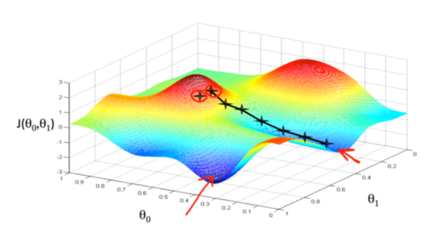
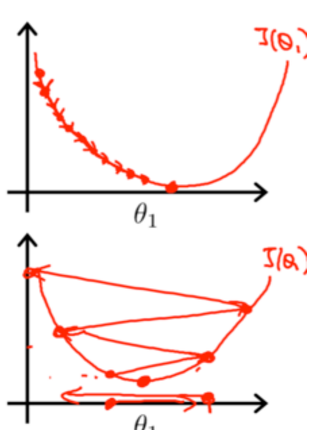
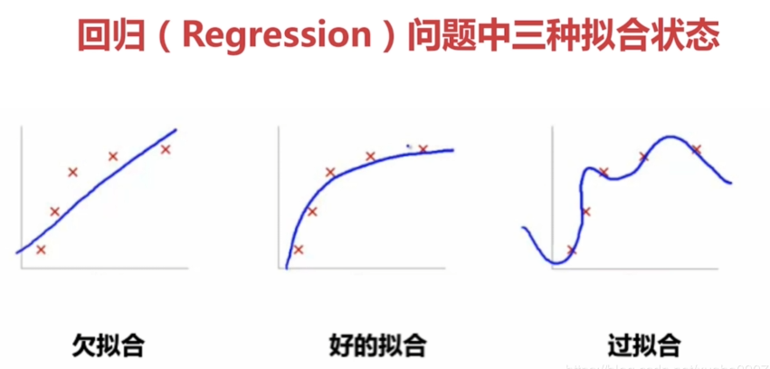
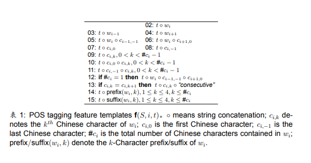
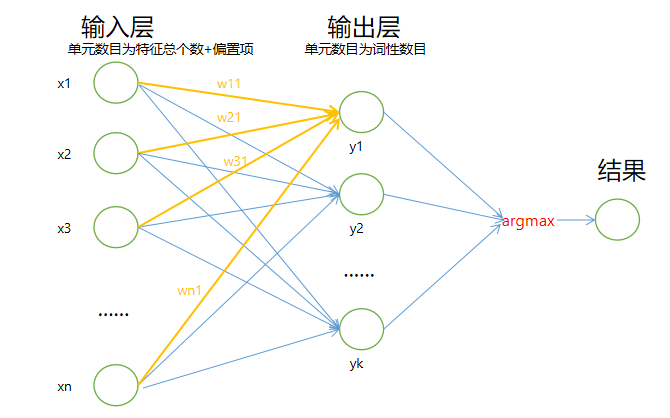
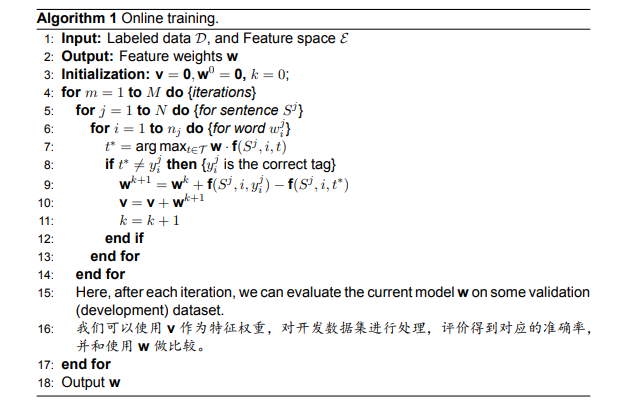
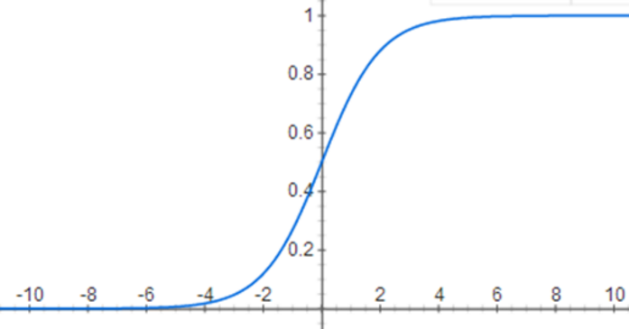

前言
本文是我在学习苏州大学李正华老师的中文信息处理课程（中文信息处理（Chinese Information Processing）Course Resources）时，对于线性模型和对数线性模型的一些个人见解和思考，同时参考了一些书籍和网上的资料编写而成。写这篇文章的主要目的是加深自己对于该模型的理解，如有错误欢迎在评论区指出，非常感谢！
从问题出发
与隐马尔可夫模型的讲解类似，我们在这里依旧围绕自然语言处理中的经典问题词性标注问题进行讨论和解释。
- 给定一个句子X，输出句子中每一个单词对应的词性。

与隐马尔可夫模型不同的是，线性模型与对数线性模型将词性标注转化为了一个多元分类问题，它们将不再以整个句子序列作为模型的输入，整个句子的词性序列作为模型的输出，而是假设词语之间的预测相互独立，将问题转化为从所有可能的词性类别中选取某个词语最有可能的类别进行输出。
什么是线性模型
线性模型（Linear Model)，又称为线性回归模型，是一种有监督学习模型。我们曾经在高中的时候学习过一种回归方法——线性回归。将这个方法泛化，就可以得到我们的线性模型。
我们以吴恩达老师在coursera上的机器学习课程中的房价预测例子进行说明。

如上图所示，假设我们得到了一个当地的房价数据集，其中包括了房子的面积、卧室数、层数、房龄等信息，同时给出了对应的房价。我们需要解决的问题就是如何利用房子的信息预测出它的价格。在机器学习中，我们把类似于面积、卧室数等这些样本的信息叫做样本的特征（Feature），它们是我们进行预测的依据。我们把需要预测的值叫做样本的标签（Label)。训练集中的每一个样本是一个（特征，标签)二元组。
在机器学习中，样本的特征往往是人工选择的，例如上述的面积、卧室数、层数等房屋信息。如何选择合适的特征是一门高深的学问，我们称其为特征工程。特征往往不止一个，所以使用向量的形式对其进行表示。在这里，我使用列向量$\vec x=(x_1,x_2…x_n)$来表示特征向量，由于书写列向量不是很方便，所以只能这么书写，但你需要记住$\vec x$是一个列向量。
当给定某个房子的面积、卧室数、层数、房龄等特征，在线性模型中，我们会使用一个线性方程来计算房子的价格。我们使用$h$表示这个线性方程，$h$代表hypothesis(假设) ，具体公式如下：
$$
h_{w}(x)=w_0+w_1x_1+w_2x_2+…+w_nx_n
$$
我们为每个特征给定一个特征权重$w$，这个权重可以是正数也可以是负数。其中，$w_0$为偏置项（bias），专门用来表示方程中的常数项。通过训练样本学习权重$w$，我们便可使用上述方程进行预测。
为了使公式简洁一些，引入$x_0=1$，使用列向量$\vec w=(w_0,w_1…w_n)$来表示权重向量，则公式转化为：
$$
h_{w}(x)=w_0x_0+w_1x_1+w_2x_2+…+w_nx_n\
=w^Tx
$$
线性模型的泛化
看到上述的线性方程，你可能会疑惑：上述方程得到的仅仅是一条直线方程，而需要拟合的数据点往往不能通过简单的直线来拟合。换句话说， 如果仅仅使用在此之前的单元和多元线性回归，我们只能得到多维空间的高维平面。为了进一步增强泛化能力，我们可以引入幂次项特征和多项式特征。
例如，我们的模型原先只是一个线性方程：
$$
h_{w}(x)=w_1x_1+w_2x_2
$$
为了增强拟合能力，我们可以令$x_3=x_1^2$，$x_4=x_2^2$，$x_5=x_1x_2$。于是，我们的模型将变为：
$$
h_{w}(x)=w_1x_1+w_2x_2+w_3x_3+w_4x_4+w_5x_5\
=w_1x_1+w_2x_2+w_3x_1^2+w_4x_2^2+w_5x_1x_2
$$
可以看到，此时我们的模型将可以拟合复杂的非线性函数。也就是说，很多复杂的模型都可以转化为线性模型进行建模。
但需要注意的是：过多地使用幂次项特征和多项式特征会使模型的拟合能力太强，从而导致过拟合的问题。我将专门 写一篇blog来讲解机器学习中的过拟合问题，并介绍一些解决过拟合的办法，如正则化和dropout等。
线性模型的特征提取
连续型特征
特征分为连续型特征和离散型特征。连续型特征顾名思义就是取值是连续的特征，例如上述例子中的房子面积。在实际的机器学习过程中， 很少直接将连续值作为线性回归模型和逻辑回归模型的特征输入，而是将连续特征离散化为一系列0、1特征交给模型，这样做的优势有以下几点：
- 离散特征的增加和减少都很容易，易于模型的快速迭代。
- 稀疏向量内积乘法运算速度快，计算结果方便存储，容易扩展。
- 离散化后的特征对异常数据有很强的鲁棒性：比如一个特征是年龄>30是1，否则0。如果特征没有离散化，一个异常数据“年龄300岁”会给模型造成很大的干扰。
- 线性回归模型和逻辑回归模型属于广义线性模型，表达能力受限；单变量离散化为N个后，每个变量有单独的权重，相当于为模型引入了非线性，能够提升模型表达能力，加大拟合。
- 离散化后可以进行特征交叉，由M+N个变量变为M*N个变量，进一步引入非线性，提升表达能力。
- 特征离散化后，模型会更稳定，比如如果对用户年龄离散化，20-30作为一个区间，不会因为一个用户年龄长了一岁就变成一个完全不同的人。当然处于区间相邻处的样本会刚好相反，所以怎么划分区间是门学问。
- 特征离散化以后，起到了简化模型的作用，降低了模型过拟合的风险。
离散性特征
离散型特征顾名思义就是取值是离散的特征，例如上述例子中的房龄、卧室数和层数。对于离散型特征，我们使用一种叫做one-hot的方法进行编码。
one-hot的基本思想：将离散型特征的每一种取值都看成一种状态，若你的这一特征中有N个不相同的取值，那么我们就可以将该特征抽象成N种不同的状态，one-hot编码保证了每一个取值只会使得一种状态处于“激活态”，也就是说这N种状态中只有一个状态位值为1，其他状态位都是0。举个例子，假设我们以学历为例，我们想要研究的类别为小学、中学、大学、硕士、博士五种类别，我们使用one-hot对其编码就会得到：
小学->[1,0,0,0,0]
中学->[0,1,0,0,0]
大学->[0,0,1,0,0]
硕士->[0,0,0,1,0]
博士->[0,0,0,0,1]
特别地，如果该离散型特征只有True或False两种取值，那么我们通常用1表示True，0表示False。
线性模型的训练过程
定义优化目标
当我们写出了假设函数$h$后，接下来我们要做的就是通过已有的训练集得到合适的模型权重$\vec w=(w_0,w_1…w_n)$。
为了进行权重的训练，首先，我们要定义三个函数：
- 损失函数（Loss Function ）：单个样本的预测值和真实值（标签）的误差。
- 代价函数（Cost Function ）：整个训练集所有样本的预测值和真实值（标签）的误差，也就是损失函数的平均。
- 目标函数（Object Function）：最终需要优化的函数。等于经验风险+结构风险（也就是代价函数 + 正则化项）。
这里，我们先不讲解正则化的知识，假设我们的目标函数即为代价函数。那么线性模型的优化问题即为最小化所有样本的误差的平均值。线性模型的误差可以用许多函数来表示，其中比较常用的一种是均方误差(Mean squared error) ，这里我们使用均方误差来描述我们的模型误差（PS：更多损失函数可以参考机器学习中常用的损失函数你知多少？）
假设训练集中样本的标签为$y$，样本的数量为$m$，预测值为假设函数的输出$h_{w}(x)$，则需要优化的目标函数为：
$$
J(w)=\frac{1}{2m}\sum_{i=1}^{m}(h_w(x^{(i)})-y^{(i)})^2
$$
我们的目标便是选择出可以使得建模误差的平方和能够最小的模型参数，即找到合适的模型权重$\vec w$，使$J(w)$取得最小值。需要注意的是，目标函数中的1/2仅仅是为了方便求导。
从极大似然估计到损失函数
在隐马尔可夫模型的讲解中，我曾经说过损失函数和极大似然估计有着紧密的联系，例如我们在逻辑回归模型里使用的交叉熵损失函数其实就是似然函数加上负号。也就是说，最优化问题既可以理解为最大化模型的似然估计，也可以理解为最小化模型的损失函数。
为什么会出现这样的现象呢？其实这并不是巧合，是可以通过数学公式进行推导的。具体推导内容可以参考这篇讲义各损失函数与最大似然。
优化方法
正规方程法
正规方程法可以用于求解线性模型的目标函数取得最小值时，权重$w$的准确值。但在机器学习中，我们很少使用这种方法求解模型的权重，我在这里简单提一下它的弊端：
- 对于一个由$n$个训练样本的特征向量$x$组成的训练集矩阵$X$，计算极值点的时间复杂度为$O(n^3)$，当训练集规模很大时，正规方程法将变得十分缓慢。
- 正规方程法需要使用训练集矩阵$X$的逆矩阵$X^{(-1)}$，但是我们无法保证$X$一定可逆。
- 只适用于线性模型，不适合逻辑回归模型等其他模型 。
梯度下降法
我们已经说过，当训练集规模很大时，例如有上百万、上千万的数据时，正规方程法将会非常缓慢，那么有没有办法能够降低时间复杂度呢？答案是有的，我们在这里可以使用梯度下降法进行求解。
为了将问题简化，我们假设模型现在只存在两个特征，对应的权重为$\theta_0$和$\theta_1$。 我们绘制一个等高线图，三个坐标分别为$\theta_0$和$\theta_1$和$J(\theta_0,\theta_1)$：

则可以看出在三维空间中存在一个使得$J(\theta_0,\theta_1)$最小的点，我们可以发现均方差损失函数的图像很明显是一个凸函数，即不存在局部最优解的问题。
梯度下降法的相当于我们下山的过程，每次我们要走一步下山，寻找最低的地方，那么最可靠的方法便是环顾四周，寻找下山速度最快的方向前进，持续该过程，最后便能无限接近最低点。
对于函数而言，便是求得该函数对所有参数的偏导（梯度），每次根据梯度更新这些参数，直到参数收敛为止，注意这些参数必须同步进行更新。 从数学上的角度来看，梯度的方向是函数增长速度最快的方向，那么梯度的反方向就是函数减少最快的方向。那么，如果想计算一个函数的最小值，就可以使用梯度下降法的思想来做。
假设模型共有$n$个特征，加上偏置项的特征$x_0=1$，共有$n+1$个特征。则对于某个权重参数$w_j$进行梯度下降的公式可以表示为：
$$
w_j=w_j-\alpha\frac{dJ(w)}{dw_j}=w_j-\alpha\frac{1}{m}\sum^{m}_{i=1}(h_w(x^{(i)})-y^{(i)})x_j^{(i)}
$$
其中，$\alpha$是一个由我们自己设置的超参数（hyper parameter）——学习率 （learning rate），它决定了我们沿着能让目标函数下降程度最大的方向向下迈出的步子有多大。
梯度下降的过程形象表示便是如下图所示，一步一步下降达到最低点。

需要说明以下几点：
$\alpha$为学习率，学习率决定了学习的速度，我们需要选择合适的学习率。
如果$\alpha$过小，那么学习的时间就会很长，导致算法的低效。
如果$\alpha$过大，那么由于每一步更新过大，可能无法收敛到最低点。由于越偏离最低点函数的导数越大，如果$\alpha$过大，某一次更新直接跨越了最低点，来到了比更新之前更高的地方。那么下一步更新步会更大，如此反复震荡，离最低点越来越远。
以上两种情况如下图所示 ：

我们的算法不一定能达到最优解。 但是由于线性回归模型中的函数都是凸函数,所以利用梯度下降法，是可以找到全局最优解的，在这里不详细阐述。
我们这里得到的是数值解而非解析解，存在着一定误差。
顺便说一下，我这里举例的是批量梯度下降（batch gradient descent,BGD），即尝试将所有样本的误差优化到最小。这种方法的优点是每次下降都是朝着全局最优的方向前进。但是，我们发现它每次都要计算所有样本的损失，这在大批量数据的情况下会非常缓慢。
还有一种梯度下降的方法叫做随机梯度下降法（ Stochastic gradient descent），它每次选取一个随机样本，尝试优化它的损失函数。虽然随机梯度下降法每次下降是朝着局部最优的方向前进，无法保证全局的优化，但整体而言，它的下降方向还是朝着全局最优点前进的。与此同时，它的计算量相较于批量梯度下降大大减少了。
此外，还有一种方法叫做小批量梯度下降法（mini-batch gradient descent），这是现在最为常用的一种梯度下降学习法，它是BGD和SGD的折中。它每次尝试优化一个mini-batch-size数量的样本，即减少了运算量，又降低了梯度下降方向出错的可能性。
过拟合与正则化
在前面我们提到了可以通过引入幂次项特征和多项式特征来增加模型的拟合能力。但是，模型的拟合能力过强有时候并不是一件好事。下面，我将介绍线性回归模型中的过拟合 (over-fitting) 问题。
首先，我们给出过拟合的定义：
在统计学中，过拟合（英语：overfitting，或称过度拟合）现象是指在拟合一个统计模型时，使用过多参数。对比于可获取的数据总量来说，一个荒谬的模型只要足够复杂，是可以完美地适应数据。过拟合一般可以视为违反奥卡姆剃刀原则。当可选择的参数的自由度超过数据所包含信息内容时，这会导致最后（拟合后）模型使用任意的参数，这会减少或破坏模型一般化的能力更甚于适应数据。过拟合的可能性不只取决于参数个数和数据，也跟模型架构与数据的一致性有关。此外对比于数据中预期的噪声或错误数量，跟模型错误的数量也有关。
通俗的说，过拟合问题的本质是我们模型的学习能力太强，导致过于强调拟合训练集的样本，从而丢失了泛化的能力。当模型出现了过拟合的问题，它虽然能非常好地适应我们的训练集，但在新输入变量进行预测时可能会效果不好 。
我们借用吴恩达老师coursera课程中的PPT来描述过拟合、欠拟合、好的拟合三种情况。

在这里，我尝试用一个易于理解的例子来解释上述三种情况：
我们可以把学生做练习题的过程看成是模型的训练过程，学生在做了很多练习题后，可以参加考试了，我们可以把考试看作为模型的预测过程。欠拟合很简单，就是平时不认真学习，做练习题和参加考试的分数自然都很低，也就是训练集和测试集的准确率都很低。那么过拟合是什么呢？过拟合就是平时只知道死记硬背，仅仅记住了练习题，却不知道举一反三，虽然平时作业分数很高，但是考试成绩却并不好，也就是训练集准确率很高，但测试集准确率很低。最佳的情况就是既认真做练习，又不局限于练习题，这种就是我们虽说的拟合较好的情况。
为了解决过拟合的问题，我们应该引入一个参数项，在进行梯度下降的时候尽可能使得参数变小，这样可以使得很多额外的特征的权重接近于0。 这个方法也叫做正则化（regularization）。此外，还有一些防止过拟合的办法，例如神经网络中的dropout等，我会在接下来的博客中继续为大家介绍。
正则化中的参数项一般也叫做正则项，常用的正则项有以下两种：
- L1正则项：各个权重的绝对值之和，可以产生稀疏权值矩阵，即产生一个稀疏模型，可以用于特征选择 。同时，一定程度上 也可以防止过拟合 。
- L2正则项：各个权重的平方和，可以防止模型过拟合（overfitting）。
线性模型和对数线性模型中，我们通常采用的是L2正则项。加入正则项后，模型的代价函数变为：
$$
J(w)=\frac{1}{2m}[\sum_{i=1}^{m}(h_w(x^{(i)})-y^{(i)})^2+\lambda\sum_{j=1}^{n}w^2]
$$
梯度下降的公式变为：
$$
w_j=w_j-\alpha\frac{dJ(w)}{dw_j}=w_j-\alpha\frac{1}{m}\sum^{m}_{i=1}[(h_w(x^{(i)})-y^{(i)})x_j^{(i)}+\lambda w_j]
$$
我们可以发现，通过引入正则化项，可以使模型的所有参数在梯度下降时多下降一些，从而尽可能地减小。上式中，$\lambda$是一个用于控制正则化程度的超参数，我们一般称其为正则化系数，如果$\lambda$过大，则所有权重将趋近于0， 这样我们所得到的只能是一条平行于x轴的直线 。 所以对于正则化，我们要取一个合理的$\lambda$的值 。超参数的选择是机器学习中最为常见的问题，我们一般使用开发集进行调参。
顺便提一下，过拟合的情况下，增加训练集的样本数量将会使模型的性能得到提升。在当今这个海量数据的时代，数据是容易获得的，所以深度学习的常见做法是训练出一个拟合能力很强（层数深、神经元多）的神经网络，加上大规模的训练样本，再加上一些正则化的方法，所得出的模型通常性能最好。
回到词性标注问题上来
相信通过前面的介绍，你已经对线性模型有了基本的认识，下面我们回到词性标注任务上，简单地介绍一下如何基于多元分类的思想使用线性回归模型进行词性标注。
基本思路
在我们之前的介绍中，你可能会发现，线性模型主要是用于解决机器学习中的回归（regression）问题。也就是说，它预测的最终结果通常是连续值。虽然与对数线性模型相比，线性模型不常用于分类（classification），但在介绍对数线性模型之前，我们仍可以通过一些方法使其运用在分类标注词性上。
最基本的思想就是，我们通过选取词语的一些特征，训练出一个线性模型，模型的输出为该词语标注为各词性的分值（score），然后我们选取分值最大的词性作为预测的结果。通过这一转化，我们将线性回归模型运用在了分类问题上。
特征获取
与之前预测房价的例子不同，词性标注模型的特征不是事先定义好的，而是通过特征模板（feature template）在训练集中抽取而来的。特征模板需要专家进行手工的定义。目前，学术界常用的用于词性标注的特征模板如下表所示。

可以看到，我们一共使用了14种特征模板，其中包含了许多有用的信息，例如词信息，字信息，词缀信息等等。
在实际训练过程中，我们需要先构建特征空间（feature space）。它是训练集中所有特征的集合。构建的方式是：我们每次选取一个词，根据特征模板抽取相应的14种特征，并将其加入到特征空间内。需要注意的是特征空间中不能出现重复的特征。
在这里，我们还可以对特征抽取进行优化。我们观察特征模板可以发现，对于每个样本，每一种特征的模板都需要抽取每一种词性的特征，而对于所有不同的词性，其特征模板的后缀都是相同的。通过计算机中经常使用的段加偏移的思想，我们可以大大减少构建特征空间所耗费的时间，将时间复杂度由$O(MN)$降为$O(M+N)$。具体的优化操作不再赘述，大家可以参考李老师的讲义。
我在这里画出了这个线性模型的示意图，你应该就能理解为什么它的特征空间可以用二维矩阵的方式来存储，以及它是如何工作的。

模型训练
对于模型的训练，我们将采用一种叫做在线学习（Online training）的方式。这是一种经常用于推荐系统的学习算法，方便对模型进行实时训练。你可以把它看作是一种近似于我们之前所提到的随机梯度下降法的学习算法。它每次选取一个实例进行训练。由于样本的标签是经过one-hot处理的离散值，而我们模型的输出是取值范围在负无穷到正无穷 ，所以我们在这里无法使用前述的梯度下降算法进行参数的训练。取而代之的是如下的算法。

简单的讲解一下，可以看到，我们每次选取一个样本进行训练，如果该样本预测正确，那么不修改模型的参数，否则，将该样本与正确词性关联的特征权重全部加1，与错误词性关联的特征权重全部减1。你可以看作是给预测正确词性的特征一个激励，而给预测错误词性的特征一个惩罚。
特别地，我们在这里还可以使用上图中$v$作为模型特征权重，这叫做averaged perceptron，我经过实验发现使用$v$确实比$w$更好。有关学习算法的优化问题我将专门撰写一篇博客，介绍常见的优化算法，如momentum算法，RMsprop算法和Adam算法的数学原理等。
什么是对数线性模型
回顾一下我们之前介绍的线性模型，它可以将词性标注转化为一个多分类问题，通过给当前词标注为每种词性的情况进行打分，并选择分值最高的词性作为当前词的标注结果，从而进行词性预测。但这样做其实存在着一些弊端：
- 一些极端值可能会大大影响分类的效果。
- 对于分类问题，$y$取值为 0 或者1，但如果你使用的是线性模型，那么假设函数的输出值可能远大于 1，或者远小于0，即使所有训练样本的标签都等于 0 或 1。尽管我们知道标签应该取值0 或者1，但是如果算法得到的值远大于1或者远小于0的话，就会感觉很奇怪。同时，我们也就无法使用损失函数进行梯度下降优化。
为了解决上述问题，我们可以使用对数线性模型（log-linear model），或许它的另一个名称更为常用，也可以叫做逻辑回归模型（logistic regression model），不过似乎人们在使用逻辑回归模型时，默认解决的是二分类问题，这里我们称之为多分类的逻辑回归模型似乎更合适。
对数线性模型主要做的就是将线性模型输出的分值使用非线性函数映射到[0，1]区间上，即将分值转化为概率，这种形式大大减少了极端值的影响，同时概率应用在分类问题上也更易于理解，我们也可以通过样本的真实标签和预测概率定义目标函数，从而使用梯度下降法进行模型训练。
从线性模型到对数线性模型
为了将分值转化为概率，我们需要使用一些非线性函数进行映射。比较常用的两种函数分别为：Sigmoid函数和Softmax函数，前者用于二分类的对数线性模型中，而后者用于多分类的对数线性模型中。顺便提一下，在深度学习中，Sigmoid和Softmax是最为常用的几种激活函数（activation function）之一，他们为神经网络增加了非线性特征，从而使神经网络的表达能力大大增强。与此同时，他们也经常是分类任务的神经网络输出层的首选激活函数，其在输出层的作用和在对数线性模型中的作用是一样的，即将分布在任意区间内的分值转化为[0，1]上的概率。
Sigmoid函数（二分类问题）
我们使用$z$来表示原先的线性模型的假设函数输出（注意：你可能会在别的地方看到式子的最后加上了偏差项$b$，我在这里没有将偏差项特别拎出来，而是为特征向量额外添加了一个维度$x_0=1$，来和权重$w_0$共同表示偏差）：
$$
z=w^Tx
$$
则Sigmoid函数的形式为：
$$
g(z)=\frac{1}{1+e^{-z}}
$$
可以看到，它的函数图像如下：

可以很明显的看出，该函数将实数域映射成了[0,1]的区间 ，无论线性模型的输出是什么，我们都可以将其转化为[0，1]上的值，也就是概率。
所以，加入了Sigmoid函数后，对数线性模型的假设函数变为：
$$
h_w(x)=g(z)=\frac{1}{1+e^{-z}}=\frac{1}{1+e^{-w^Tx}}
$$
Softmax函数（多分类问题）
我们依然使用$z$来表示原先的线性模型的假设函数输出，由于多分类问题每个样本会输出多个概率值，每个概率值都是该样本标注为某个词性的概率，我们使用$z_i$来表示当前样本被标注为第$i$种词性的分值，共有$n$种词性。则Softmax函数的形式为：
$$
g(z_i)=\frac{e^{z_i}}{\sum_{j=1}^{n}{e^{z_j}}}
$$
所以，加入了Softmax函数后，对数线性模型的假设函数变为：
$$
h_w(x_i)=g(z_i)=\frac{e^{z_i}}{\sum_{j=1}^{n}{e^{z_j}}}=\frac{e^{w^T_ix}}{\sum_{j=1}^{n}{e^{w^T_jx}}}
$$
我们发现，该函数实际上对每一个类别 i 的概率进行了归一化处理，从而保证其范围在[0，1]上，此外，它还保证了对于每一个样本，其标注为每一个类别的条件概率之和为1（这也是另一种多分类方法One vs All所不能做到的）。实际上，你还可以推导发现，Sigmoid函数其实是Softmax函数在类别 n=2 时的特殊形式。
对数线性模型背后的数学原理
事实上，上述两种非线性映射函数并不是科学家们一拍脑袋就定义出来的，他们都是有严格的概率统计学证明的。Sigmoid函数是Softmax函数在二分类时的特殊形式，而Softmax函数可以通过信息论中的最大熵模型进行推导。我们根据求解最大熵函数在给定的约束条件下的极值（使用拉格朗日乘子法），可以得到最大熵模型的参数形式，也就是Softmax函数的形式。
具体证明过程可以参考李老师的讲义。
定义对数线性模型的优化目标
如果我们在对数线性模型中依然使用线性回归模型的均方差损失函数进行梯度下降，我们将发现加入了非线性映射函数的均方差损失函数不再是一个凸优化问题，无法保证获得全局最优解，所以我们需要另寻新的损失函数。
按照我们惯用的做法，我们依然可以通过极大化似然估计的方式来求解对数线性模型的优化目标。
极大似然估计：利用已知的样本结果信息，反推最具有可能（最大概率）导致这些样本结果出现的模型参数值（模型已定，参数未知） 。
由于我们的词性标注问题是多分类问题，所以我在这里就推导一下Softmax函数的目标函数，事实上，Sigmoid函数只是它的一种特殊情况。
我们假设当前词预测为第 i 种词性的概率为$\hat{y_i}$，根据Softmax函数，我们的模型现在是：
$$
\hat{y_i}=h_w(x_i)=\frac{e^{w^T_ix}}{\sum_{j=1}^{n}{e^{w^T_jx}}}
$$
我们已知模型的真实概率分布，也就是样本结果信息，即训练集中每一个样本的特征向量和标签。极大似然估计的目标就是找到一组合适的模型的参数，使得这些样本结果出现的概率最大。也就是说，对于每一个样本，我们都希望它被标注为正确标签的概率最大。 对于整个训练集，我们当然是期望所有样本的联合概率都达到最大。我们的目标函数，本身是个联合概率，但是假设每个样本独立，那就可以写成连乘形式：
$$
J(w)=\frac{1}{N}\prod^{N}_{i=1}\prod^{M}_{j=1}(\frac{e^{w^T_jx_i}}{\sum_{k=1}^{M}{e^{w^T_kx_i}}})^{y_{ij}}
$$
其中，$N$指样本数量，$i$指第几个样本，$M$指类别数量，$j$指第几个类别，$y_{ij}$指第$i$个样本被标注为第$j$个类别的取值是0还是1。
我们还可以发现，对于每一个样本$i$，其标签都是一个One-hot向量，即只有一个正确标签为1，其余均为0，所以我们可以对上述目标函数进行化简。设$y_{i}$为第$i$个样本的正确标签，则目标函数简化为：
$$
J(w)=\frac{1}{N}\prod^{N}_{i=1}(\frac{e^{w^T_ix_i}}{\sum_{k=1}^{M}{e^{w^T_kx_i}}})^{y_{i}}
$$
到了这一步，其实我们就可以使用当前的目标函数进行梯度下降，计算模型参数了。但是，我们发现连乘的形式会使得我们梯度求解变得很复杂，所以为了简化计算，我们可以对目标函数取对数：
$$
logJ(w)=\frac{1}{N}\sum^{N}_{i=1}y_{i}log(\frac{e^{w^T_ix_i}}{\sum_{k=1}^{M}{e^{w^T_kx_i}}})=\frac{1}{N}\sum^{N}_{i=1}y_{i}log\hat{y_i}
$$
以上就是我们极大化似然估计的目标函数，我们只需要使用梯度上升法对它进行优化即可获得最合适的$w$。此外，我们也可以加上一个负号，将其转化为最小化损失函数的形式，从而进行梯度下降求解。
$$
Loss(w)=-\frac{1}{N}\sum^{N}_{i=1}y_{i}log\hat{y_i}
$$
上面这个式子就是Softmax对数线性模型的损失函数，它其实就是我们常说的交叉熵（cross entropy）损失函数，更多有关交叉熵的知识来自于信息论，我在此就不多加介绍了。
特别地，如果你根据上述损失函数计算梯度，你会发现对于同一个特征权重，交叉熵损失函数的梯度居然神奇地和均方差损失函数一致！可以自己动手推导一遍。
用对数线性模型解决词性标注问题
有关对数线性模型以及梯度下降法的知识在之前我已经全部介绍过了。在这里我们只需要应用即可。
依然是使用我们的特征模板构建特征空间，模型使用Softmax函数进行概率转化，模型的训练方式采用随机梯度下降法，损失函数选择交叉熵损失函数。正则化方式选择L2正则化，随机打乱数据集，并使用学习率下降算法，对学习率进行模拟退火处理，使模型在梯度下降后期趋于稳定。
具体代码可以参考 https://github.com/SUDA-LA/CIP 。
总结
以上就是我在线性模型和对数线性模型学习过程中总结的基础知识，接下来，我还会介绍条件随机场（CRF）模型，并给出其解决词性标注问题的方法。
参考资料（部分）
- 苏州大学李正华老师的课件
- 李航老师《统计学习方法》的第六章
- Andrew Ng的机器学习课程
- Andrew Ng的深度学习课程